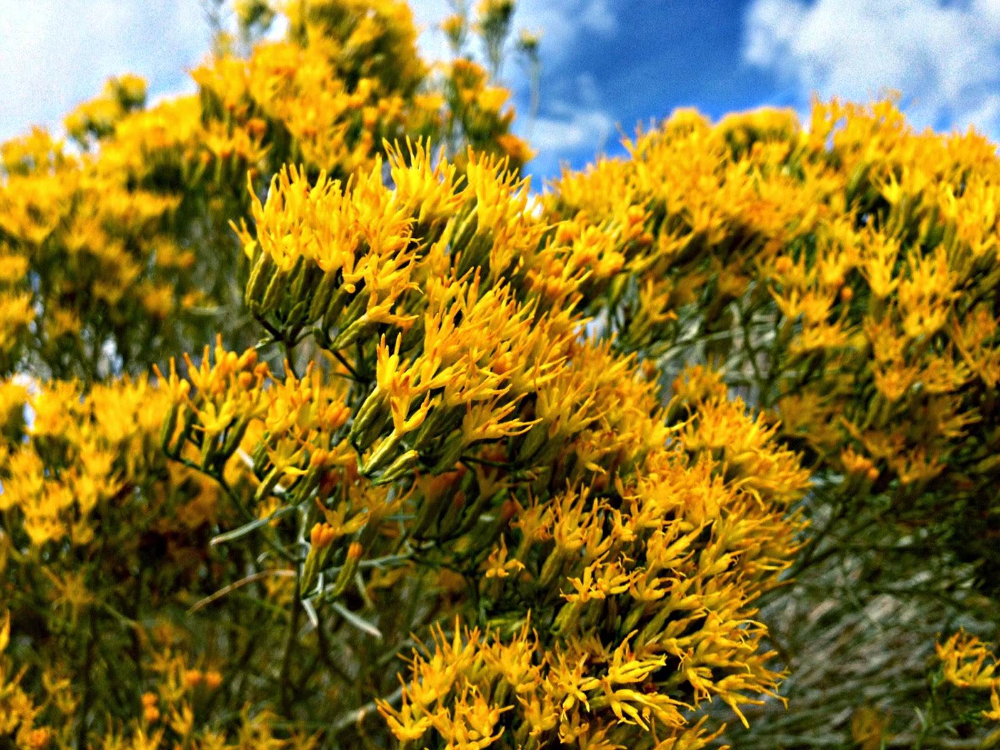
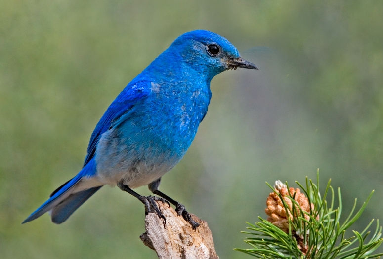
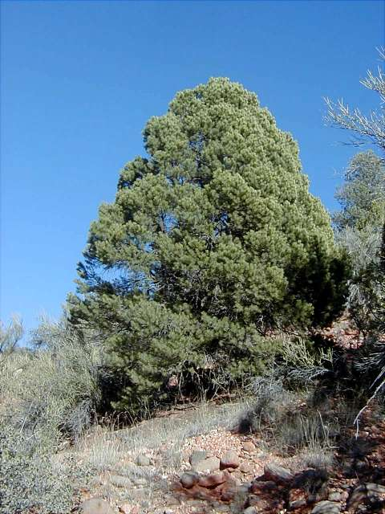

Nevada is the seventh-largest of the 50 states but is one of the most sparsely populated. Carson City, in the western part of the state, is the capital. Gambling is legal in Nevada, and Las Vegas, the state’s largest city, is known internationally for its opulent casinos and as an entertainment destination. Nevada is also home to the Hoover Dam, which was the single largest public works project in the history of the United States, and Lake Mead, the largest reservoir in the country.
| Date of Statehood | Capital | Population | Size |
|---|---|---|---|
| October 31, 1864 | Carson City | 3.10 million | 110,573 square miles |
All for Our Country
Sagebrush
Mountain Bluebird
Single-Leaf Piñon and Bristlecone Pine
Interesting facts